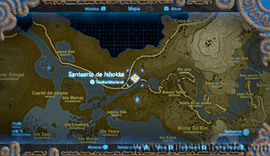
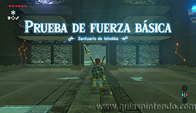
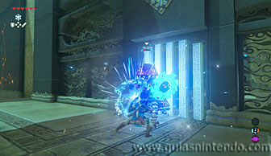
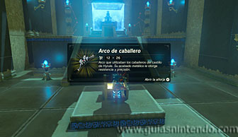

Puedes lelgar a este santuario desde que llegas a la región de la torre de Lanayru. Lo encuentras al norte de la torre, cerca de ella. De nuevo tienes que derrotar a un miniguardián en su interior.

No es de los más complicados (miniguardián 2.0) ni tiene mucha energía, simplemente acaba con él como ya has hecho con otros y recoge tus recompensas. El cofre que está cerca del altar contiene un arco de caballero. Cuando llegues al altar podrás examinarlo para obtener un símbolo de valía.
